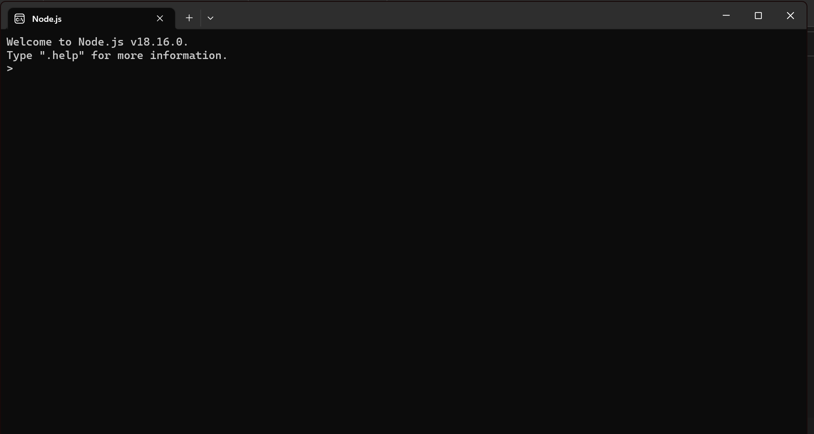

| Contenido | |
|---|---|
| Proposito del Software | Proceso de instalación |
| Video de Instalación (Auxiliar) | Evidencia de Instalación |
Es un entorno de aplicaciones web desarrollado para la creacion de aplicacion web del lado del servidor, la idea principal es usar el modelo de entrada y salida sin bloqueo y controlado, esta forma es liviano y eficiente comparado con las aplicaciones en tiempo real.
Para instalar Node.JS, deberas:
En este video se explica el proceso de instalación de Node.JS
Esta es mi evidencia de Instalación
